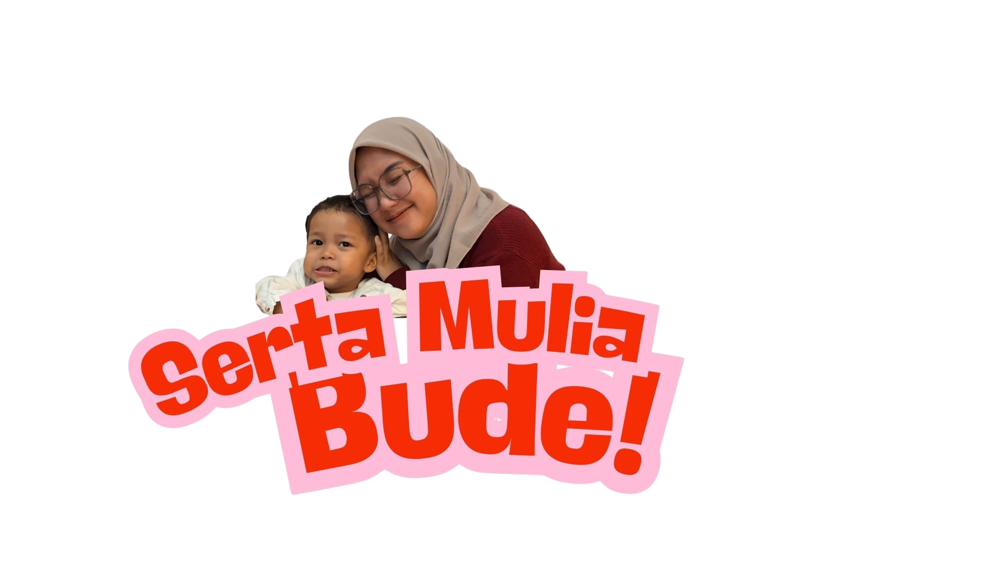

Ada kejutan buat Bude Ninas!
Coba klik fotonya deh ✨

Coba klik fotonya deh ✨

Halo Bude, ✨ Selamat ulang tahun yang ke-36! Di hari yang spesial ini, doaku yang paling tulus untuk Bude: semoga Bude selalu dilimpahi kebahagiaan yang tidak pernah habis, tubuh yang selalu sehat dan bertenaga, serta senyum hangat yang senantiasa Bude bagikan ke orang-orang di sekitar. Bude, memasuki usia 36 tahun ini, aku ingin membocorkan satu harapan besarku untuk Bude JIAKH WKWK. Aku berharap perjalanan Bude dalam mencintai diri sendiri bisa naik ke level yang baru. Kalau selama ini bentuk self-love ituu embrace diri Bude apa adanya, di tahun ini yuk kita ubah reaksinya. Mencintai diri sendiri yang berani memberi terbaik untuk tubuh dan jiwa bude cielahhhh Mencintai diri sendiri berarti berani mendorong diri Bude pelan-pelan ke arah yang lebih baik: Untuk badan Bude, supaya bisa lebih kuat, segar, dan fit di setiap napas bude. Untuk pikiran Bude, supaya senantiasa menemukan ketenangan di tengah riuhnya hari bude sbg manajer kopdes. Dan untuk hati Bude, supaya selalu adem, damai kayak aliran sungai di rustic market pandaan. Bude deserves semua hal baik itu lho!!! Bude berhak mendapatkan versi terbaik dari diri Bude sendiri. Jadi Bude... yuk, mulai langkah kecil itu sama aku dengan ikot aku ke THOR WKWKWKWK (masih berusaha)🏃♀️💨✨